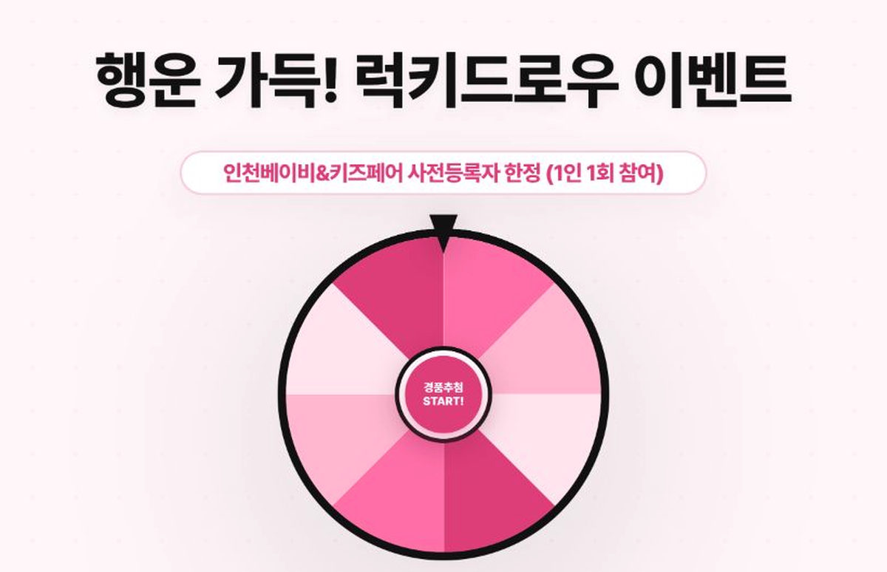

RYU YEONJU · EXHIBITION PLANNER
4년간 20여 개 전시·행사를 운영하며
참가자·참가사·현장을 조율해 온 전시·행사 프로젝트 기획자
전시기획부터 현장 운영, 콘텐츠 설계와 디지털 도구 개선까지 직접 실행합니다.
기획만 하는 사람이 아니라, 현장에 놓일 결과물까지 끝내는 사람
FIELD
→
IDEA
→
IMPACT
→
IDEA
→
IMPACT
4년전시·행사 현장 경험
4,000+국제행사 참가자 운영
630+최대 전시 부스 운영
20+전시·행사 운영 프로젝트
MY WAY OF WORKING
핵심 직무
역량
01 전시·행사 운영
행사 일정·프로그램·현장 운영 흐름을 관리하고 프로젝트를 끝까지 실행합니다.
02 이해관계자 커뮤니케이션
참가자·참가사·운영스탭의 요구를 파악하고 현장 이슈를 조율합니다.
03 콘텐츠·고객 경험 설계
행사 정보를 대상별로 구조화하고 뉴스레터·카드뉴스·이벤트로 참여를 유도합니다.
04 운영 프로세스 개선
반복 업무를 모바일 도구와 AI·DX 방식으로 전환해 운영 효율을 높입니다.
SELECTED WORK · THINGS I ACTUALLY MADE
대표 프로젝트 성과
행사기획부터 콘텐츠 제작, 현장 운영 도구까지 한 사람이 끝까지 연결한 사례입니다.
01 · DX / AIX / PRODUCT

모바일 스마트
럭키드로우
“추첨할 때마다 두 명이 붙어야 한다”는 현장 문제를 혼자 쓸 수 있는 모바일 도구로 바꿨습니다.
운영 인력 2명→1명 · 참여율 130% 향상
프로젝트 상세 →02 · CONTENT ASSET
뉴스레터
템플릿
한 번 쓰고 버리는 이미지가 아니라, Notion에 쌓아 다음 행사에도 다시 쓰는 콘텐츠 자산을 만들었습니다.
콘텐츠 자산 보기 →03 · SNS / CUSTOMER JOURNEY
카드뉴스
시스템
대상별로 달라야 하는 행사 메시지를 템플릿화하고, 필요한 순간 바로 꺼내 쓸 수 있게 정리했습니다.
설계 방식 보기 →A NOTE FROM ME
제가 합류하면
현장과 실행을 바로 연결합니다.
행사 일정과 참가자 흐름을 파악하고, 필요한 안내물과 운영 도구를 직접 만들어 바로 적용하겠습니다. 현장을 아는 사람이어서 가능한 빠른 판단과 실행이 제 강점입니다.
핵심 직무 역량